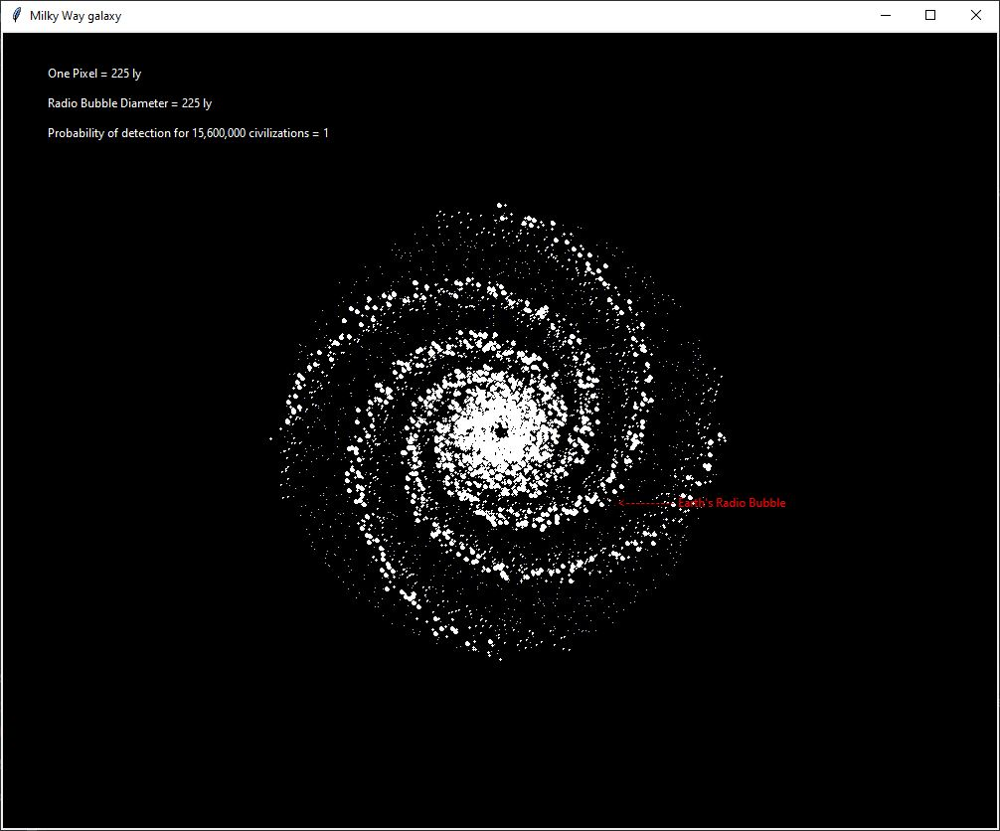

This will be my first post that isn't strictly about Artificial Intelligence or the development of possible machine learning algorithms. Instead, given recent news about the possibility of biological life on Venus, I'd like to explore the Drake Equation. The Drake equation is a probabilistic argument used by physicists to estimate the possible number of civilisations in the galaxy that are producing EM (electromagnetic) emissions - such as radio waves. The equation is in a kind of state of constant update, accounting for the discoveries of numerous exoplanets by various new satellites and projects. The result of the equation, published in the scientific journal Astrobiology, was considered astounding. In order for humanity to be the first and only technologically advanced species, the probability of an advanced civilization developing on a habitable planet would have to be less than 1 in 10 billion trillion. An incredible figure. But as Enrico Fermi, physicist and creator of the first nuclear reactor, famously said: "Where is everybody?"
In truth, Fermi's quote was really an expression of skepticism regarding interstellar travel rather than of the possibility of extraterrestrial life, still, his query became known as Fermi's paradox. The argument is often reduced to a simple if-statement of sorts:
If they existed,
they would be here.
The SETI institute estimates that even with only very modest rocket technology, a civilisation with an eager enough drive, could explore the entire galaxy and potentially colonise it within a time-frame of 10 million years. Upon reading that, you might well think that to be a ridiculously long time. In terms of human lives it certainly is, but on another scale, it is only 1000th of the age of the age of the Milky Way. You see, from Fermi's paradox, some scientists have come to conclude that the weight of the odds favours the idea that we are, in fact, alone in the Universe - among them notably is Max Tegmark, who will likely be mentioned in a lot of future posts. Others, however, find holes in the argument and look for points that may need reexamining.
In the project I present to you today, I want to investigate the absence of interstellar transmissions from alien sources. I'll do this by way of the Drake equation. I'll use it to calculate the probability of one civilisation detecting another based on the volume of their transmissions and the output given by the equation. In doing all this, I'll also be creating a graphical model of our own galaxy, the Milky Way.
The Milky Way is a typical spiral galaxy - a flat disc with a kind of central protrusion that most likely contains a supermassive black hole at the core. The spiral arms, of which there are four, consist of densely packed gas, dust and stars. In diamater, the Milky Way is roughly ≈100,000 ly (light-years) across. Because the central protrusion is uninhabitable to life - due to high-levels of radiation - we can discount some of this volume for this project. Arguments about extremophiles and the like are definitely interesting and not without justification, but we can think about that another day.
The central objective in this project is, for a given number of advanced galatic civilisations and an average radio bubble volume, I will try to estimate the probability of any civilisation detecting the radio transmissions coming from any other civilisation. I will provide some perspective on this point by providing a 2-dimensional graphical representation of the Milky Way and plotting the area of the our own radio bubble here from Earth.
I'll start in a Jupyter notebook and use SymPy and some basic Latex to output a nice looking version of the Drake Equation and have a better look at what the program will be handling:
The first three variables, due to advances in detection of exoplanets, are becoming increasingly constrained. For ne, the most recent data that I have surveyed suggests that somewhere between 10 and 40 percent of all planets may be hospitable to some sort of life. You probably already noticed that, for the remaining components in the equation, Earth is the only example befitting the argument. In the 4.5 billion years since the Earth formed, Homo sapiens has existed for only 200,000 years, civilisation for only 6,000 years and the transmission of radio signals for just 112 years. With respect to the parameter L, you can likely think of many factors that can impact a civilisation's ability to transmit radio signals. Off the top of my head: asteroids, wars, ice-ages, plague, supernovas, coronal mass ejections. And we can use this to highlight the impact it would have on the ability to communicate, since a shorter time of transmission means less likelihood for civilisations to coexist. From the Wikipedia article on the Drake equation, Drake's estimate from the beginning of the 60s suggested the number of communicating civilisations in the galaxy to be somewhere between 1,000 and 1,000,000,000. More recent estimates have adjusted that figure from between 1 (that'll just be us, all alone) and 15,600,000. I'll use these figures in my program.
Unless radio waves are focused into a beam for specific transmission, the waves transmitted are incidental in nature. Hopefully you can see why we might not want to explicitly broadcast our presence to aliens - a quick look to the history of humanity should give you an idea at least. So almost all of our transmissions are essentially incidental in nature. These incidental radio waves form an expanding sphere around the Earth with a diameter of around 225 ly. Now this sounds gargantuan, but what matters to us is the detectable size. From my studies in physics, I know that the wave front of radio waves is subject to the inverse square law, meaning that, as the wave expands out it also happens to lose density of power. Not to forget that additional loss can occur because of absorption and, particularly in the case of radio waves, scattering. With this in mind, you can visualise this spherical volume surrounding the earth, which tails off at some point in which the signal becomes too weak and therefore indistinguishable from background noise. With an understanding of the simple physics of the behaviour of waves and using our very best technology, radio telescopes have only detected our 'bubble' at a distance of 'only' 16 ly out. That's quite a contrast from the bubble suggested earlier on. For the sake of my project, I'll make a fairly major assumption that the reason we haven't discovered alien lifeforms out there is because that other civilisations have technology somewhat similar to our own. Like us, they also have a fairly paranoiac approach to broadcasting - and perhaps don't want other lifeforms to see their "come get us" sign and announce their presence. This way, it's reasonable to investigate bubble sizes a little large than our own and sizes somewhat smaller too. I'll say a range of diameters from 25 ly to 250 ly. Despite the fact that we can't detect a 250 ly bubble, it might be interesting to see how the odds would differ if we in fact could.
If the number of advanced civilisations in the galaxy increases then, intuitively, the probability of one detecting another will also increase. To assign this to an actual probability, I will use the brute-force power of my computer to get to an answer rather than rely on fumbling my way through Bayesian statistics. This brute-force approach will require generating a 3-dimensional model of the Milky Way, with a random distribution of civilisations strewn throughout, then measuring the distances between them by calculating Euclidian distance. Obviously, with potentially billions of civilisations to analyse, my laptop would likely struggle with the computational expense of this approach. In fact, it definitely would because my laptop is a joke. However, since I'm dealing with such massive unknown factors, precision is probably not at the top of the list for this exercise, I simply want to be in the ballpark. Instead, an easy simplification is given by viewing the galaxy as comprising of units of radio bubbles, with some calculations like so:
disc_volume = pi * R^2 * disc_height
radio_bubble_volume = 4/3 * pi *r^3
scale_volume = disc_volume/radio_bubble_volume
As you can see from my calculations above, the scale_volume is the number of equivalent volumes that can fit within the galaxy, which we could think of as boxes numbered from 1 to n (the maximum number of boxes). To place civilisations, all we will need to do is to pick random box numbers. Picking the same duplicate number will mean multiple civilisations in the same box, and we can therefore assume that they are able to detect each other. I understand this isn't strictly true but because of the large numbers involved, any discrepancies will tend to cancel each other out - just like in rounding numbers. Some maths here will help in avoiding to have to distribute this way every single time, requiring a fairly simple polynomial to generate future probability estimations. Since polynomials make nice curves, they're kind of specialised for this type of problem. For the formula to work with a variable number of civilisations and sizes of bubbles, I have had to use the ratio of the number of civilisations to the total volume. Using my calculations, I have plotted the polynomial in Python with the help of numpy and matplotlib, you can see the polynomial in the code:
import numpy as np
import matplotlib.pyplot as plt
plt.style.use('seaborn-whitegrid')
x = np.linspace(0, 5, num=50)
fx = []
for i in range(len(x)):
fx.append(-0.00476*x[i]**4 + 0.06681*x[i]**3 -
0.3605*x[i]**2 + 0.9215*x[i] + 0.00826)
plt.plot(x, fx, 'o', color='black')
plt.plot(x, fx)
plt.grid(True)
plt.axvline()
plt.axhline()
plt.title('Probability of detection')
plt.ylabel('Probability')
plt.xlabel('Ratio of Civilisation to Scale Volume')
plt.show()
And the output:
As you can see, a ratio of 0.5, as an example, means that there will be half as many civilisations as there are available radio-bubble equivalent volumes, a ratio of 2 means there are twice as many civilisations as volumes, etc. The y-axis illustrates the probability that an equivalent volume contains greater than one civilisation. The cool thing about the graph is that, just from a quick glance, we can see that it takes a lot of civilisations to ensure that they will all have a 'neighbour'. You could well imagine that 999,999 from 1,000,000 equivalent volumes contains at the very least two civilisations. Using your new simulacrum-God-powers, you decide to randomly distribute one new advanced civilisation. The odds that the new civilisation will end up in the remaining volume with the single occupant are one in a million. That last space is your needle in a haystack.
To determine a probability of detection, given the outline designated above, the code will need to randomly choose locations (our radio bubble volumes) for a set number of civilisations and locations, it will then need to count how many of these locations occur only once (as in, they'll be containers with only one civilisation inside). The code will then need to repeat this experimental process a number of times in order to converge towards an estimate. Then it will need to repeat for a new number of civilisations. The output of the code will be presented as probability versus the ratio of civilisations per volume, rather than the actual number of civilisations, then this will be turned into a polynomial expression so that the output results will be easily portable. The good thing is, the program will need only to be run a single time:
# # # Drake equation program
# J-A-Collins 19/09/20
from random import randint
from collections import Counter
import numpy as np
import matplotlib.pyplot as plt
num_equivalent_volumes = 1000
max_civilisations = 5000
trials = 1000
civilisation_step_size = 100
x = []
y = []
for num_civilisations in range(2, max_civilisations + 2, civilisation_step_size):
civilisations_per_volume = num_civilisations / num_equivalent_volumes
num_single_civilisations = 0
for trial in range(trials):
locations = []
while len(locations) < num_civilisations:
location = randint(1, num_equivalent_volumes)
locations.append(location)
overlapping_count = Counter(locations)
overlapping_rollup = Counter(overlapping_count.values())
num_single_civilisations += overlapping_rollup[1]
probability = 1 - (num_single_civilisations / num_civilisations * trials)
print("{:.4f} {:.4f}".format(civilisations_per_volume, probability))
x.append(civilisations_per_volume)
y.append(probability)
coefficient_inputs = np.polyfit(x, y, 4) # 4 =4th order polynomial
d = np.poly1d(coefficient_inputs)
print("\n{}".format(d))
xp = np.linspace(0, 5)
_ = plt.plot(x, y, '.', xp, d(xp), '-')
plt.ylim(-0.5, 1.5)
plt.show()
As you can see, NumPy comes in handy to perform some relatively straight-forward polynomial regression on the calculations output from the prediction. The graph plots the calculated results (seen as dots) versus the results predicted by the polynomial (as the line).
The next step is generating a graphical model of the galaxy as a 2-dimensional view. By plotting the size of Earth's current transmission bubble on this display, I gained some perpespective regarding the size of the galaxy and our minuscule place in it. Modeling our Milky Way galaxy is really about modeling the spiral arms. Each arm in the spiral represents a logarithmic spiral, a common geometric feature common in nature. For those not familiar with that kind of thing, the logarithmic spiral is self-similar, you'll find it in sea-shells, flowers, galaxies, hurricanes, etc. It's basically everywhere. Anyway, since the arms spiral out from a central origin, they're graphed using polar coordinates (r, ϑ) rather than the somewhat more traditional (x, y) of the Cartesian coordinate system. Polar coordinates represent the distance from the origin and the angle made by r against the x-axis - so the coordinates of the origin are, unsurprisingly (0, 0). The method to the graphical representation is to simply build the spirals out of circles of varying sizes which will represent the stars in the galaxy. The simulations are stochastic so each one will be a little bit different.
I have scaled the model to light-years per pixel, while the width of each pixel will be equivalent to the diameter of our previously designated radio bubble scale. You can see the outcome of this means that, when investigating a particular bubble, if I change it's diameter, the units of the scale will also change and the model will need to be rebuilt - a simple variable containing the solution to dividing the disc radius by the bubble diameter will help scale the model to the bubble here. So, my galaxy simulator code will calculate the probability of detection for any number of civilisations and bubble sizes before then generating a model of the galaxy. When a bubble the size of our current transmission bubble is used, it will annotate our bubble, in the appoximate location. If you want to run the code yourself, remember that you will have to add a main for the top-level script environment:
from random import randint, uniform, random
import tkinter as tk
import math
SCALE = 225 # 225 is Earth's bubble
number_advanced_civilisations = 15600000
# Milky Way (light-years)
radius_of_disc = 50000
height_of_disc = 1000
volume_of_disc = math.pi * radius_of_disc**2 * height_of_disc
root = tk.Tk()
root.title("Milky Way galaxy")
c = tk.Canvas(root, width=1000, height=800, bg='black')
c.grid()
c.configure(scrollregion=(-500, -400, 500, 400))
def scale_galaxy():
radius_of_disc_scaled = round(radius_of_disc / SCALE)
bubble_volume = 4/3 * math.pi * (SCALE/2)**3
volume_of_disc_scaled = volume_of_disc/bubble_volume
return radius_of_disc_scaled, volume_of_disc_scaled
def detect_prob(volume_of_disc_scaled):
ratio = number_advanced_civilisations / volume_of_disc_scaled
if ratio < 0.002:
detection_probability = 0
elif ratio >= 5:
detection_probability = 1
else:
detection_probability = -0.004757 * ratio**4 + 0.06681 * ratio**3 - 0.3605 * \
ratio**2 + 0.9215 * ratio + 0.00826
return round(detection_probability, 3)
def random_polar_coordinates(radius_of_disc_scaled):
r = random()
theta = uniform(0, 2 * math.pi)
x = round(math.sqrt(r) * math.cos(theta) * radius_of_disc_scaled)
y = round(math.sqrt(r) * math.sin(theta) * radius_of_disc_scaled)
return x, y
def spirals(b, r, rot_fac, fuz_fac, arm):
spiral_stars = []
fuzz = int(0.030 * abs(r)) # Randomly shifts star locations
theta_max_degrees = 520
for i in range(theta_max_degrees):
theta = math.radians(i)
x = r * math.exp(b*theta) * math.cos(theta + math.pi * rot_fac)\
+ randint(-fuzz, fuzz) * fuz_fac
y = r * math.exp(b*theta) * math.sin(theta + math.pi * rot_fac)\
+ randint(-fuzz, fuzz) * fuz_fac
spiral_stars.append((x, y))
for x, y in spiral_stars:
if arm == 0 and int(x % 2) == 0:
c.create_oval(x-2, y-2, x+2, y+2, fill='white', outline='')
elif arm == 0 and int(x % 2) != 0:
c.create_oval(x-1, y-1, x+1, y+1, fill='white', outline='')
elif arm == 1:
c.create_oval(x, y, x, y, fill='white', outline='')
def star_haze(radius_of_disc_scaled, density):
for i in range(0, radius_of_disc_scaled * density):
x, y = random_polar_coordinates(radius_of_disc_scaled)
c.create_text(x, y, fill='white', font=('Helvetica', '7'), text='.')
def main():
radius_of_disc_scaled, volume_of_disc_scaled = scale_galaxy()
detection_probability = detect_prob(volume_of_disc_scaled)
spirals(b=-0.3, r=radius_of_disc_scaled, rot_fac=2, fuz_fac=1.5, arm=0)
spirals(b=-0.3, r=radius_of_disc_scaled, rot_fac=1.91, fuz_fac=1.5, arm=1)
spirals(b=-0.3, r=-radius_of_disc_scaled, rot_fac=2, fuz_fac=1.5, arm=0)
spirals(b=-0.3, r=-radius_of_disc_scaled, rot_fac=-2.09, fuz_fac=1.5, arm=1)
spirals(b=-0.3, r=-radius_of_disc_scaled, rot_fac=0.5, fuz_fac=1.5, arm=0)
spirals(b=-0.3, r=-radius_of_disc_scaled, rot_fac=0.4, fuz_fac=1.5, arm=1)
spirals(b=-0.3, r=-radius_of_disc_scaled, rot_fac=-0.5, fuz_fac=1.5, arm=0)
spirals(b=-0.3, r=-radius_of_disc_scaled, rot_fac=-0.6, fuz_fac=1.5, arm=1)
star_haze(radius_of_disc_scaled, density=8)
c.create_text(-455, -360, fill='white', anchor='w',
text='One Pixel = {} ly'.format(SCALE))
c.create_text(-455, -330, fill='white', anchor='w',
text='Radio Bubble Diameter = {} ly'.format(SCALE))
c.create_text(-455, -300, fill='white', anchor='w',
text='Probability of detection for {:,} civilisations = {}'.
format(number_advanced_civilisations, detection_probability))
# 225 ly will provide annotation
if SCALE == 225:
c.create_rectangle(115, 75, 116, 76, fill='red', outline='')
c.create_text(118, 72, fill='red', anchor='w',
text="<---------- Planet Earth's Radio Bubble")
root.mainloop()

You'll notice that using 'fuzz' helps create a more realistic galaxy. Had I not added this def, our spiral logarithm would simply output some swirly lines. The final output gives us a model with a central black hole. You can see that, despite the fact that our radio bubble at a scale of 225 ly is barely the size of a full-stop, if civilisations had a detection range of 112.5 ly, and if there were as many of these civilisations as current high-end predictions suggest, then the probability of detection is 1. That's it. 1.
It's only fair at this point to remember the massive amount of uncertainty in the inputs here, as well as the simplifying assumptions that I've used to make the project feasible on my puny laptop. The point here is not accuracy however, I simply wanted to explore the general direction of the Drake Equation. With that in mind, should humanity expect to find another sophisticated civilisation that isn't actively trying to make contact with us? It seems probably not.
With current technology, we are able to detect radio emissions from a civilisation as far away as 16 ly (which equates to a 32 ly radio bubble. That means that, even if the galaxy were filled with 15.6 million technologically advanced civilisations (the current predicted number), then the chance of finding 32 ly bubbles is less than 4%
Looking back at the crude models I have produced, in particular the one with our own bubble annotated, you might appreciate, as I have, the sheer emptiness of space. A lot of the more recent discourse in the physics community suggests that the window for detecting civilisations with radio waves is shorter than previously thought. Given our own widespread switch to digital signals and satellite comms, it is thought that incidental radio leakage will fall by at least a factor of four. It could well be that advancing civilisations have a period of emission that blooms for around a hundred years before fading away, back into obscurity. This kind of info is probably why search projects for alien life using radio telescopes barely receive funding anymore. In fact, this is why the recent news about Venus has come to light, because efforts have shifted to optical telescopes and spectroscopy, to find gases and their signatures in the atmospheres of planets.